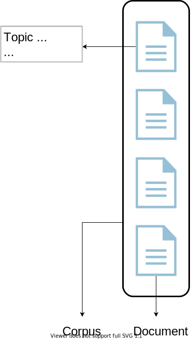
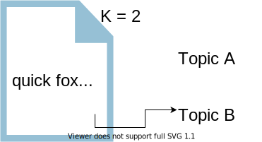
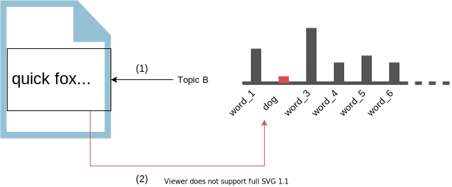
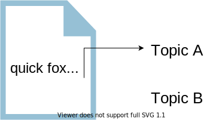
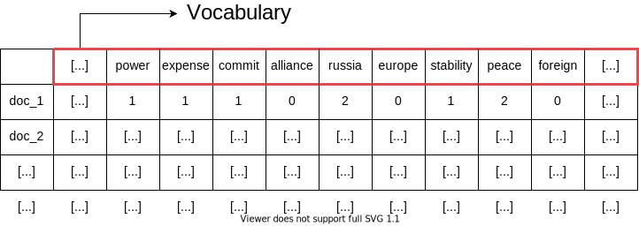

1.1. Was ist topic modelling
-
Ein Machine Learning (ML)-Verfahren in NLP, das;
- eine Textsammlung (Corpus) als Input nimmt,
- Muster in Wörter oder Ausdrücke findet und
- diese als Topics gruppiert.
- Jedes Dokument kann abhängig von der Methode ein einziges oder mehrere Topics haben.
- Meistens unsupervised: Eine vorherige Beschriftung/ Klassifikation der Dokumente ist nicht nötig.

1.2. Latent Dirichlet Allocation (LDA)
-
Die topic modelling Methode.
- Erst veröffentlicht bei David Blei u.a. (2003). Die ersten Anwendungen: Wiss. Abstracts zu kategorisieren.
- Annahmen von LDA:
- Jedes Document ist eine Sammlung von den Topics.
- Jedes Topic ist eine Sammlung von den Wörtern.
1.3. Wie funktioniert LDA
-
Am Anfang werden alle Wörter zu den Topics beliebig zugeordnet (Die Anzahl der Topics
Kgeben wir selbst ein). -
Der Algorithmus geht mit bei jeder Iteration jedes Wort und jedes zugeordnete Topic durch, und kontrolliert:
- Wie oft das Topic in jedem Dokument vorkommt (1).
- Wie oft ein Wort in einem Topic aufscheint (2).
- Tritt ein Wort nicht häufig in den zugeordneten Dokumenten auf ⇒ es gehört zu einem anderen Topic.
- Treten die Wörter des zugeordneten Topics nicht so oft im Dokument auf ⇒ das Dokument gehört zu einem anderen Topic.



- Die Publikationen über China aus innerhalb der letzten 10 Jahre analysieren.
- Aus unterschiedlichen wiss. Gebieten relevante Publikationen identifizieren.
- Die relevanten Publikationen thematisch zu klassifizieren.
- Breite Definition der Relevanz.
- Einschätzung des Aufwands.
- Wenig Erfahrung mit den Methoden.
- Die enorme Anzahl der unterschiedlichen wiss. Gebiete.
2.1. Knowledge Network on China (KNoC):
2.2. Beispiel Datensatz
- Publikationen über China zwischen 2011-2020
- Dokumentstruktur = Abstract + Title + Keywords
- Anzahl der Dokumente = 5650
- Anzahl der wiss. Gebieten = 31
- Durchschnittliche Anzahl der Wörter = ~1300
2.3. Bag of words, Pre-Processing
- Tokenization, stop word Elimination, Lemmatization/ Stemming, n-grams.
- Document-term matrix:

2.4. LDA Modell | Parametern
- Ausgrenzung der most-common Wörter = 0.25
- Number of topics (K) = 22
- Iterations = 1000; Mehrere Iterationen ergeben bessere Resultate, jedoch macht es das Verfahren auch Zeitaufwendig.
- Andere Parametern: Alpha, Beta.
- Coherence Estimation, die Konsistenz der Unterscheidung von den Themen zu berechnen:
2.5. LDA Modell | Ergebnis
Andere LDA-Varianten
-
Structural Topic Modelling:
- R-Library.
- Beachtet auch metadata (z.B. Publikationsjahr, -ort usw.)
- Entwickelt von einem Politikwissenschaftler.
- Automatisches pre-processing.
-
stLDA-C:
- Für kürzere Dokumente (z.B. Tweets)
- Ein Topik für ein Dokument.
3.1. Einschränkungen
- Ohne Wissen über den Kontext ist die Anwendung problematisch.
- False positives sind sehr einfach zu produzieren.
- Kann die Anzahl der Topics nicht bestimmen.
- Beachtet die Ordnung der Wörter nicht (Bag of words).
- Länge der Dokumenten spielt eine wichtige Rolle.
- Keine Alternative zu der menschlichen Interpretation.
3.2. Kritik
-
Hängt zu viel von dem pre-processing ab.
-
Die Modelle sind sensitiv gegenüber den Input-Daten.
-
Es nicht einfach zu bestimmen, ob wir wirklich messen, was wir messen wollten.
-
Was ist ein Topic?
3.3. Bedeutung für die Sozialwissenschaften
- Ein Expert-Tool
- Schwierigere Fragestellungen/ Herausforderungen
Anwendungsmöglichkeiten?
Beobachtungen?